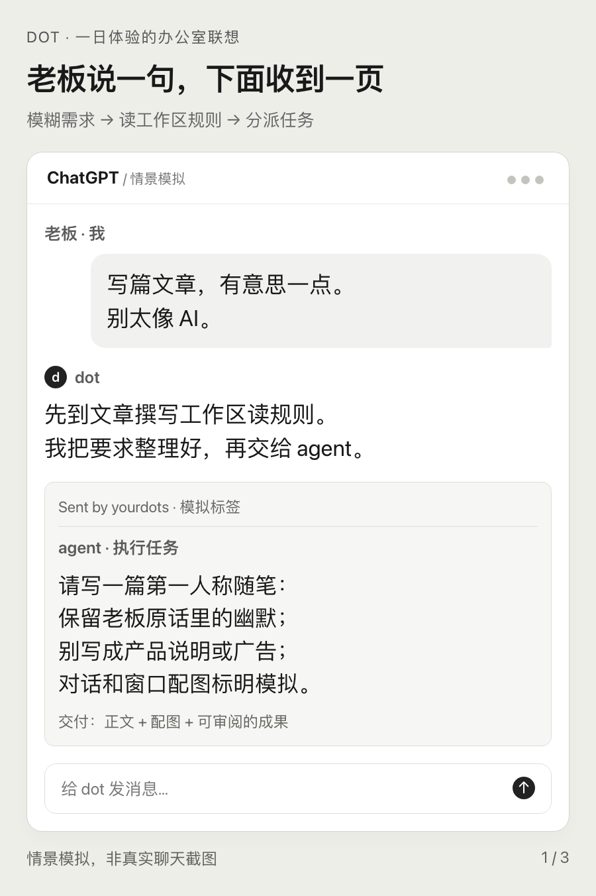
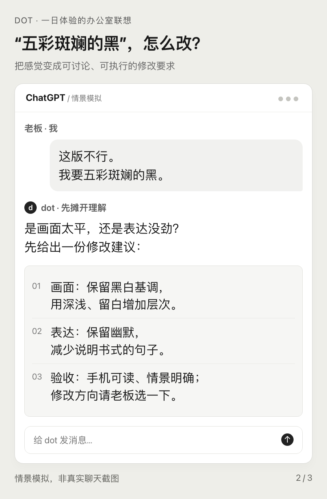
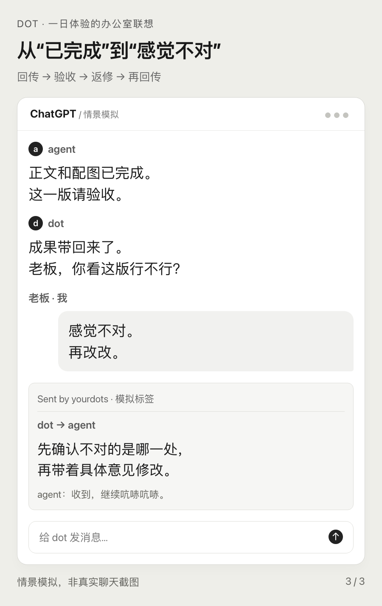

我用了一天ChatGPT里的dot，感觉AI会不会消灭中层还不好说，我已经先学会当老板了。
以前一聊AI和组织变革，最痛快的剧本就是：组织扁平化，中层先下岗。
理由也很充分。上面的话往下传，下面的事往上报，自己又不干活。这种岗位，听着就很适合被AI替代。
结果我用了dot，发现它正在干这份工作。
找工作区，读规则，理解老板那不清不楚的要求，整理成提示词，交给执行任务的智能体（agent）。干完了，收成果，回来问老板意见。老板说不行，它再回去安排修改。
我们还在讨论怎么砍掉中层，AI已经开始给自己设这个岗了。
我一张嘴，它就得开工
以前用AI，我也不轻松。材料要自己找，规则要自己交代，提示词要自己组织，成果要自己看。看完了不满意，还得解释哪里不满意。
名义上是老板，实际上是项目经理兼质检员，偶尔还得下车推一把。
dot一来，我终于可以把那句职场名言说出口了：
“你先做，我看了就知道。”
我给这套流程配了一段办公室对白。以下对话都是情景模拟，牛马全是AI。
我：“帮我写篇文章，有意思一点，别太像AI。”
有意思到什么程度？不知道。哪里像AI？到时候再说。
反正我已经把需求说完了。剩下的是你理解能力的问题。
dot接过去，找合适的工作区（workspace），读规则，把我这句话整理成一份具体的提示词（prompt）：写给谁，用什么语气，交什么文件，怎么检查。
然后开个聊天窗口，发给agent。
看到那条“Sent by yourdots”，我脑子里自动翻译成：
“老板的意思我已经领会了，你们抓紧落实。”

agent开始吭哧吭哧。我负责等待，顺便保持一种掌控全局的神情。
这岗位我适应得很快。快得有点不体面。
我一句“感觉不对”，下面又得忙半天
成果做完，dot屁颠屁颠拿回来问我意见。
我看了两眼：“这版不行。我要五彩斑斓的黑。”
这句话要是别人对我说，我大概已经开始腹诽了。轮到我说，居然觉得自己提得挺准确。
dot又领会了一番，转头去找agent：保留黑白基调，增加层次；保留幽默，减少说明书口吻。还得确认老板说的“黑”，到底指画面还是表达。
我只是表达了一下感受。下面已经有了第二轮工作。

新版回来。我再看，再说不对。它再领会，再去改。
如此循环，直到我满意，或者我终于想明白自己到底想要什么。
我以前觉得“感觉不对”很烦。现在发现，烦的是负责改的人。负责说的人，体验相当不错。
AI也需要有人“上传下达”
笑完这套流程，我反而对中层多了一点理解。
它最像中层的，不是会派活，而是“向上模糊，向下具体”。
老板说“高级一点”，执行者得知道改哪里。老板说“差点意思”，执行者得知道差的到底是哪点。没人翻译，这些话最多只能证明老板尚未满意，不能证明下面已经知道该怎么干。
把一句含糊的话，变成能开工的任务，确实是活。
干完之后也得有人往回翻译。执行者交了一堆东西，老板未必愿意逐个打开。得有人拎出成果，说清进度，把还需要判断的地方递上来。
不然，老板随手一句“给我看看”，下面就交来一个文件夹。里面还有一个叫“最终版”的文件夹，再往里，是“最终版_这次真的最终”。
所以我觉得，“上传下达”常被说得太轻巧。上传的不是一堆文件，下达的也不该只是老板原话。中间得有人整理、判断、协调，还要替两边补上那些没说出来的话。
以为AI会把组织拍扁，结果AI先在老板和干活的之间，垫上了一层。
真扁平到我直接管理每一个agent，我就得挨个交代背景，挨个看成果，再挨个追着改。听起来层级少了，细想是把项目经理、质检员和催办员都合并到我身上。扁平化的好处，未必轮得到我享受；扁平化的活，倒是一件没少。难怪这个“中间人”一出现，我立刻用上了。

当然，如果一个中层只会把“感觉不对”原封不动转发给下面，再把“已完成”原封不动转发给上面，那确实像个会走路的转发按钮。
我需要的，是有人把“感觉不对”追问成“这一处不对”，再变成“这一处怎么改”。把老板的情绪传得更快，不等于把任务交代得更清楚。
dot也得过这一关。它要是把自己的猜测写成老板的要求，agent越认真，大家越忙。老板可能还挺满意：看，团队执行力很强。
至于方向对不对，下一轮再讨论。
最先学会当老板的，可能是我
本来以为AI会消灭中层，没想到AI先把中层做成了产品。
用了一天，我还不敢替所有组织下结论。但我至少看见了，中间这层协调工作并不会因为干活的换成AI，就自动消失。
需求仍然可能含糊，成果仍然需要验收，多项工作仍然有人要安排。执行者换了，中层那份活还在。
而我这位新上任的老板，也不能光享受“你先做”的快乐。
想清楚要什么，很费脑子。说一句“感觉不对”，省事得多。dot要是太能干，我可能真的会把懒惰误认成领导力。
想到这里，我决定对agent牛马稍微好一点。下次否定之前，争取多说半句理由。
但也不能要求我第一天当老板，就有这么高的觉悟。
从此，我负责说“感觉不对”，dot负责回去开整改会。
作者简介： 陈石律师（主页 chenshi.ai），浙江海泰律师事务所副主任、高级合伙人、房地产与建设工程部主任，第十届宁波市律师协会常务理事、第七届宁波仲裁委员会仲裁员，聚焦建筑房地产、投融资、并购重组及商事争议解决。曾获多家法律媒体与专业机构认可，荣登 LegalOne 2025 中国区建工及房地产实务先锋45强、律新社2025年度管理合伙人20佳（华东），入选《商法》The A-List法律精英，获评ALB China区域市场十五佳长三角地区律师新星，并获律新社2024年度并购领域品牌之星。长期为万科、华润置地、信达地产、保利置业、招商蛇口、中海地产等企业提供法律服务，承办“首宗百亿地王”“长春第一高楼”“台州第一高楼”等代表性项目，累计服务项目投资额超千亿。近年来持续推动AI与法律实务融合，强调以结构化方法打通技术逻辑、法律判断与商业场景；著有《赋能法律人：AI底层思维与应用范式》，并在多地开展相关主题讲座与分享。